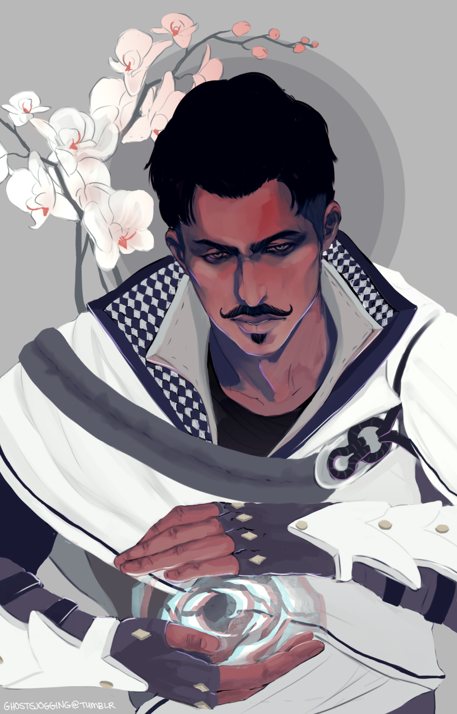

Anthony Gadea
Administrador de servidores Linux. Front-end junior
Sobre mi
Apasionado del Hardware, con amplia experiencia laboral en administracion de servidores Linux. Desarrollador web expandiendo mi abanico de conocimientos desarrolando en nuevas tecnologias.